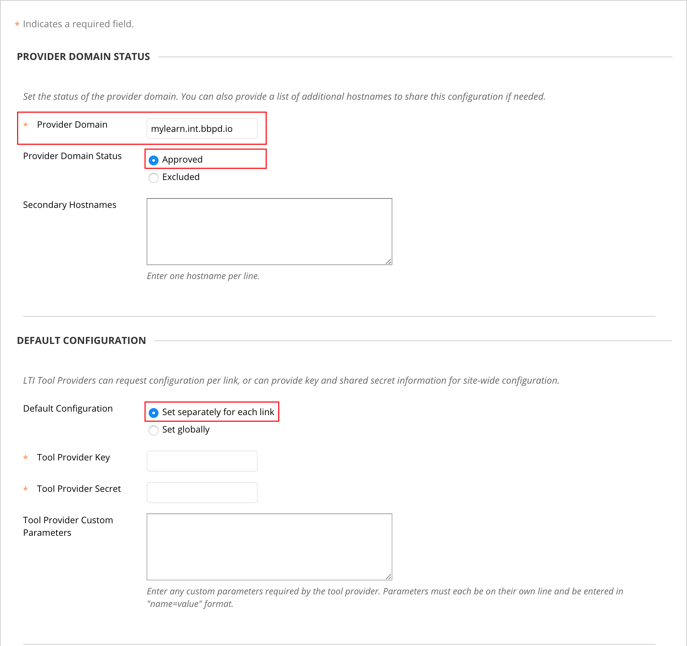
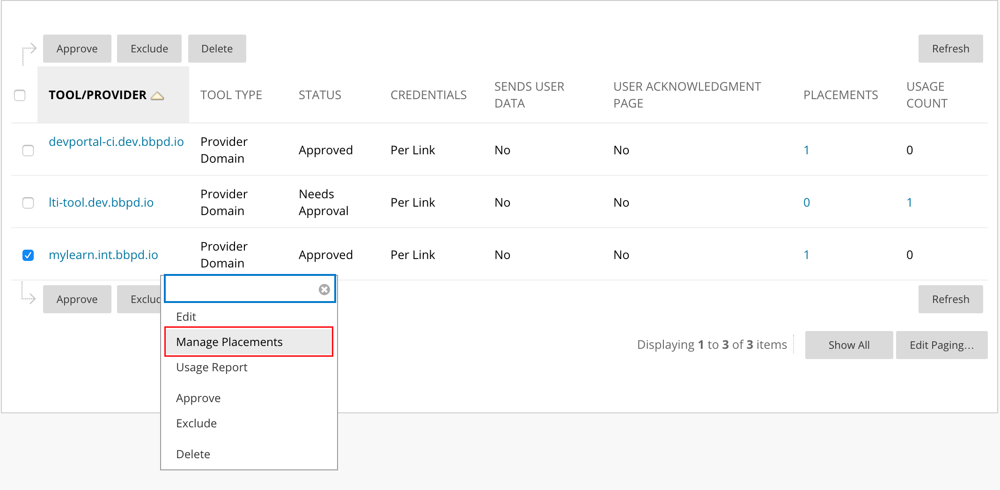
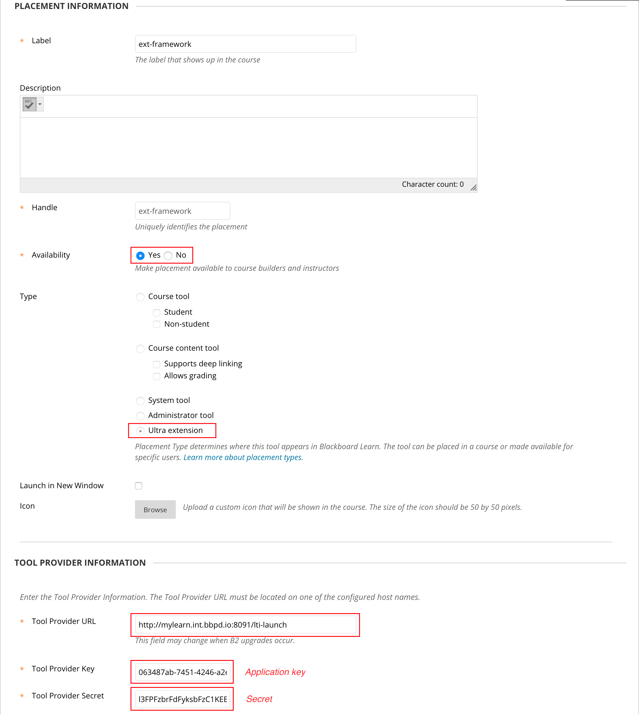
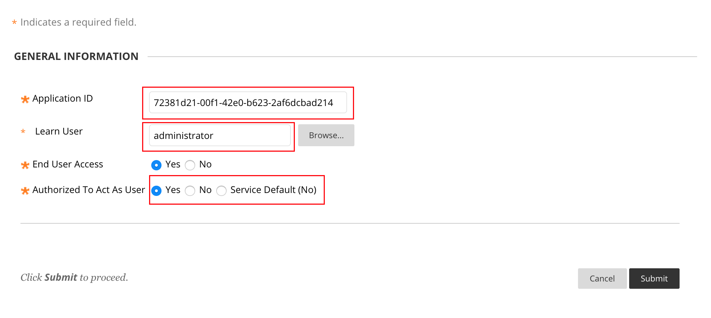
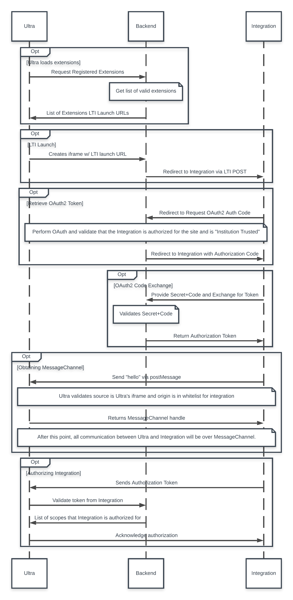
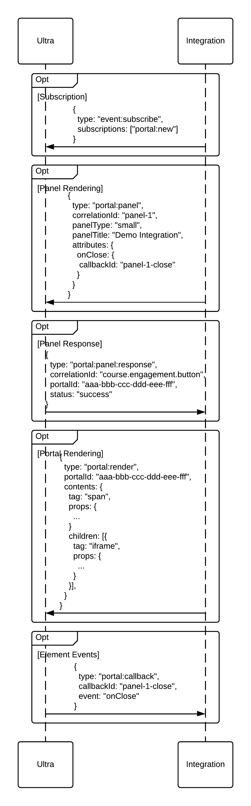

First, an application must be registered in DevPortal.
After completing the registration process, the following steps are needed to set up the extension framework in Ultra:




Downloadable Demo Integration: Demo Integration

In order for integrations to send information to Ultra, a few steps within the OAuth and LTI workflow need to be completed:
iframe for each of the integrations in the listiframe for the provided integrations, each integration will send a redirect request with their respective OAuth2 auth code// (3) Now, we need to authorize with Learn Ultra using the OAuth2 token that the server negotiated for us
messageChannel.postMessage({
type: 'authorization:authorize',
// This token is passed in through integration.ejs
token: window.__token,
});Message channels are used as the primary way for the integration to communicate to Ultra and vice versa. They will be created once the authentication workflow has been completed:
// (1) Send the integration handshake message to Learn Ultra. This notifies Learn Ultra that the integration has loaded and is ready to communicate.
window.parent.postMessage({"type": "integration:hello"}, `${window.__lmsHost}/*`);iframe, as well as check to see if the integration has been whitelisted by the user// Set up the window.postMessage listener for the integration handshake (for step #2)
window.addEventListener("message", onPostMessageReceived, false);
function onPostMessageReceived(evt) {
if (evt.data.type === 'integration:hello') {
messageChannel = new LoggedMessageChannel(evt.ports[0]);
messageChannel.onmessage = onMessageFromUltra;
}
}
function onMessageFromUltra(message) {
// (6) On click, route, and hover messages, we will receive an event:event event
if (message.data.type === 'event:event') {
// From here, you can do something with those events...
}
}// (3) Now, we need to authorize with Learn Ultra using the OAuth2 token that the server negotiated for us
messageChannel.postMessage({
type: 'authorization:authorize',
// This token is passed in through integration.ejs
token: window.__token,
});A portal denotes an area that an integration can render content into. Currently, portals are only available in rendered integration panels. Content can be rendered in a portal by following the steps below:
portal:new event// (5) Once we are authorized, we can subscribe to events, such as telemetry events
messageChannel.postMessage({
type: 'event:subscribe',
subscriptions: ['portal:new'],
});portal:panel event// (7) For demo purposes, we will open a panel. We send a message to Ultra requesting a panel be opened (if shouldShowPanel is enabled)
messageChannel.postMessage({
type: 'portal:panel',
correlationId: 'panel-1',
panelType: 'small',
panelTitle: 'Demo Integration',
attributes: {
onClose: {
callbackId: 'panel-1-close',
},
},
});portal:panel:response event should come back with a generated portalId that can be used to render content into// In the console from the provided demo, you should see a similar response
{
type: 'portal:panel:response',
correlationId: 'panel-1',
portalId: 'aaa-bbb-ccc-ddd-eee-fff',
status: 'success',
}portal:render event can be sent with the specified content to be renderedconst integrationHost = `${window.location.protocol}//${window.location.hostname}:${window.location.port}`;
// (9) Notify Ultra to render our contents into the panel
if (message.data.correlationId === 'panel-1') {
panelId = message.data.portalId;
messageChannel.postMessage({
type: 'portal:render',
portalId: message.data.portalId,
contents: {
tag: 'span',
props: {
style: {
display: 'flex',
height: '100%',
width: '100%',
flexDirection: 'column',
alignItems: 'stretch',
justifyContent: 'stretch',
},
},
children: [{
tag: 'iframe',
props: {
style: {flex: '1 1 auto'},
src: `${integrationHost}/iframe-panel`,
},
}]
},
});
}// In the console from the provided demo, you should see a similar response
{
type: 'portal:callback',
callbackId: 'panel-1-close',
event: 'onClose',
}
Generated using TypeDoc